Admin guide
Audience · AdministratorScheduled Emails — Hours Logging Reminders
After you create an opportunity, schedule an email to go out on its end date reminding assigned volunteers to log any remaining hours. Use a recipient search that targets people assigned to that opportunity with hours logged ≤ 0 (or below your threshold). The recipient list is rebuilt at send time, so only people who still match receive it. Pair this with Creating Opportunities.
Path: Communicate → Email → Scheduled Emails · Docs: Communications (platform help)
Open Scheduled Emails
Switch into JA Africa Volunteer University (or the org that owns the opportunity). Click Communicate, then under Email choose Scheduled Emails.
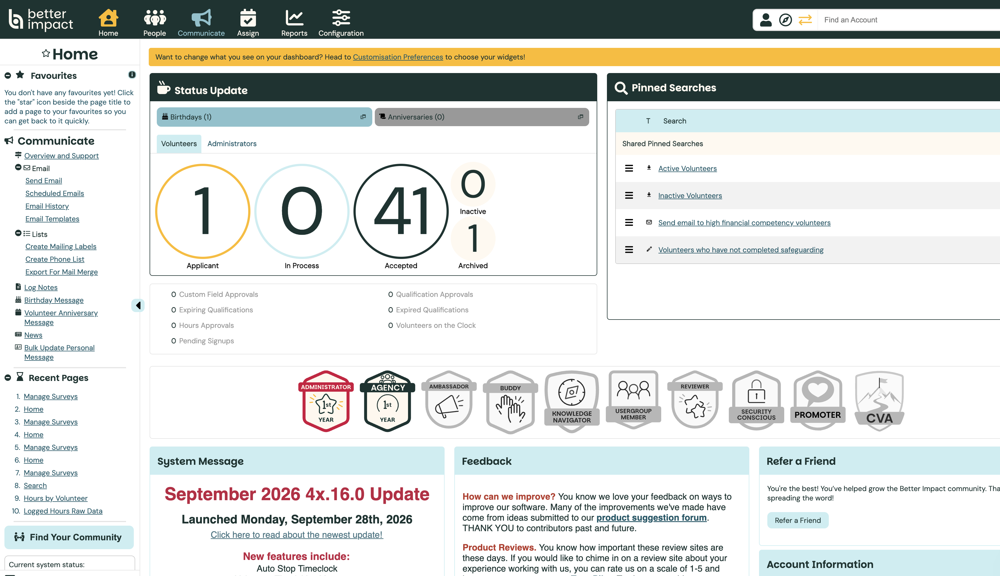
Scheduled Emails CommunicateCreate the reminder in the same org as the opportunity Full admins can manage any pending scheduled email
Start a new scheduled email
On the Scheduled Emails list, click + Create Scheduled Email (top or bottom of the list). Use Filters later to find Pending, Sent, Canceled, or Failed items.
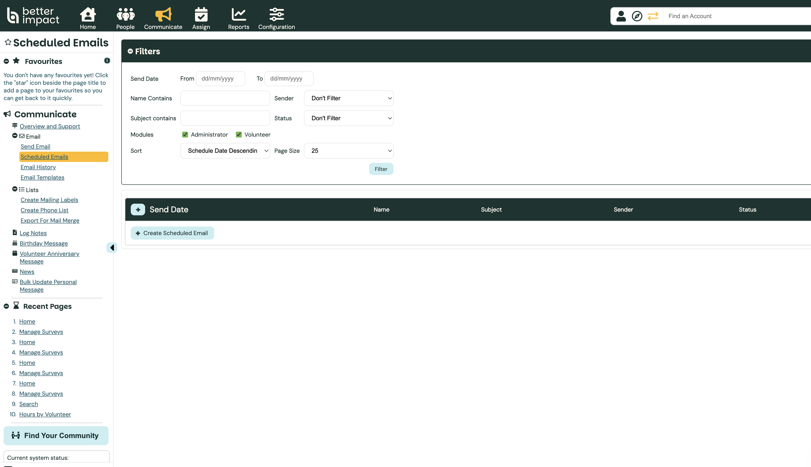
Create Scheduled EmailScheduled emails must stay Pending until send time. Once Sent, Canceled, or Failed, they cannot be edited.
Set name and send date (opportunity end date)
In Settings, name the email so you can find it later (e.g. Hours reminder — [Opportunity Name]). Add an optional internal description.
Set Send Date to the opportunity’s end date (from Creating Opportunities), and choose a morning time such as 09:00 so volunteers still have the day to log hours.
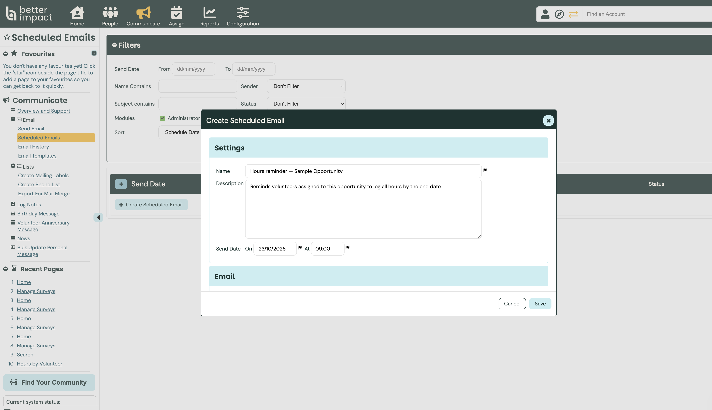
Name Send = end datePlatform limit: you can only schedule between 1 hour and 30 days from when you save. If the opportunity ends more than 30 days out, create this reminder closer to the end date (or set a calendar note to come back).
Write the subject and body
In the Email section, enter a clear subject that names the opportunity. Optionally use an email template to pre-fill text (templates are copied in — later template edits do not change this scheduled email).
Use + FN / + LN (or Insert → first/last name) so each volunteer sees their name. Attachments and read receipts are not available on scheduled emails.
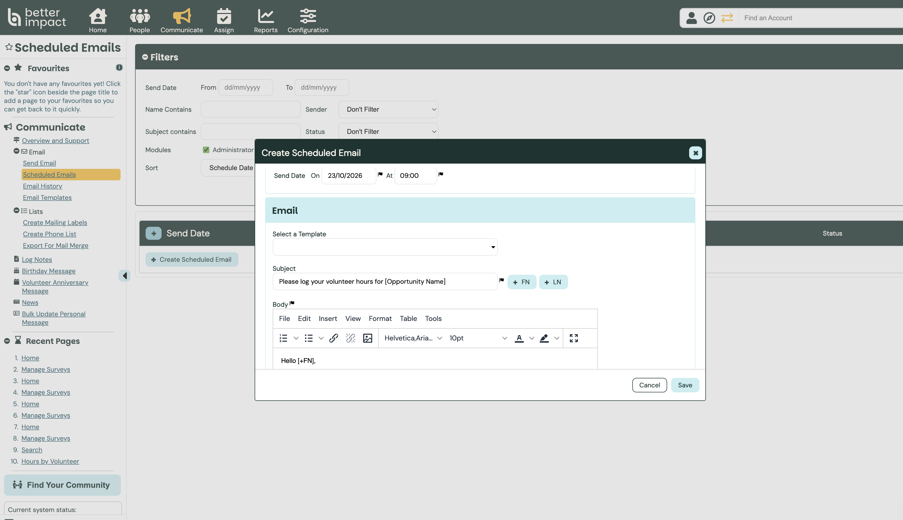
Subject + FN merge tagRemind them the opportunity has ended Ask them to log all hours in DeJAVU if not done
Target Volunteer module and build the search
Under Modules, keep Volunteer checked (uncheck Administrator). Scroll to Recipient List Search and click Build Recipient List Search.
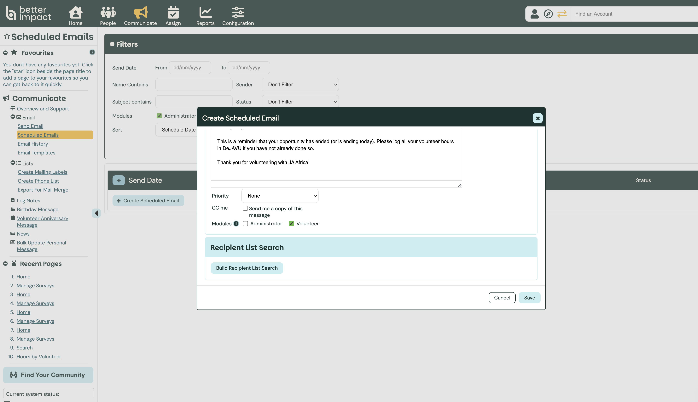
Volunteer Build Recipient List SearchOptional: check CC me to receive a copy when it sends, and include the recipient list in that copy for audit.
Filter Accepted volunteers on the opportunity
In the search dialog, check Volunteer → Accepted. Click + Add Search Criteria, choose search type Activity, then check Assigned (confirmed and unconfirmed are fine).
Under For the following activities, expand the category and tick the opportunity you just created (same name as in Manage Activities). Click Add.
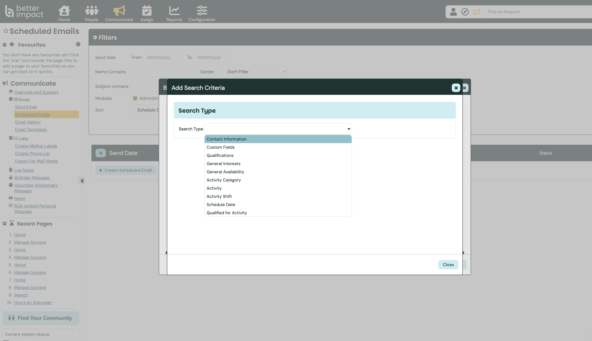
Activity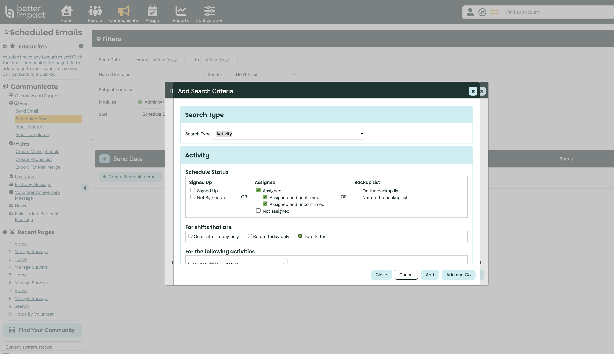
Assigned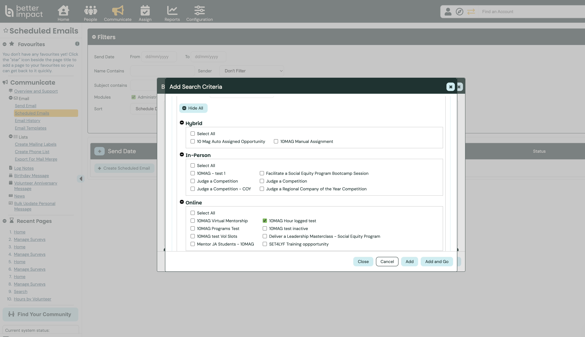
Your opportunityLimit to volunteers who have not logged hours
Click + Add Search Criteria again. Choose Hours Logged. Select is less than or equal to and enter 0 (or your programme’s minimum if you only want people under a target).
Set Category and Activity to the same opportunity so the hours filter matches that activity only. Keep Match Type as Include people who match ALL of the above.
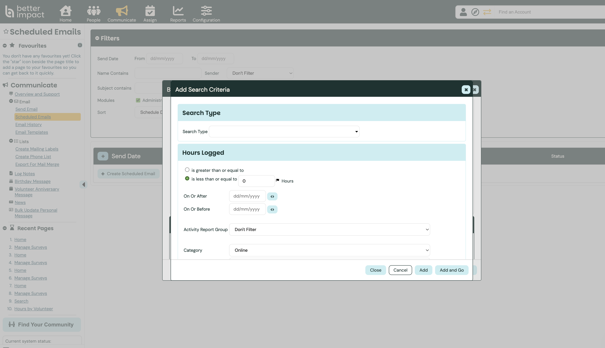
≤ 0 Hours Category · Online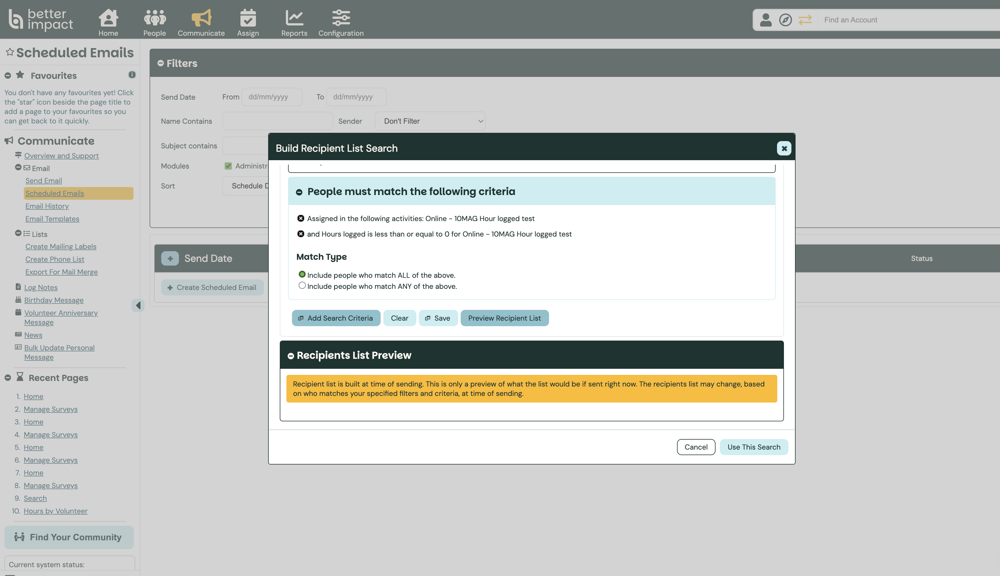
Both criteria Use This SearchThe list is evaluated at send time. Volunteers who log hours before the send date drop out of the ≤ 0 filter and will not get the reminder. Use Preview Recipient List for a current snapshot only.
Attach the search and Save
Click Use This Search. The create dialog shows a summary of the filters. Confirm Send Date, subject, and criteria, then click Save. The email appears on the list as Pending.
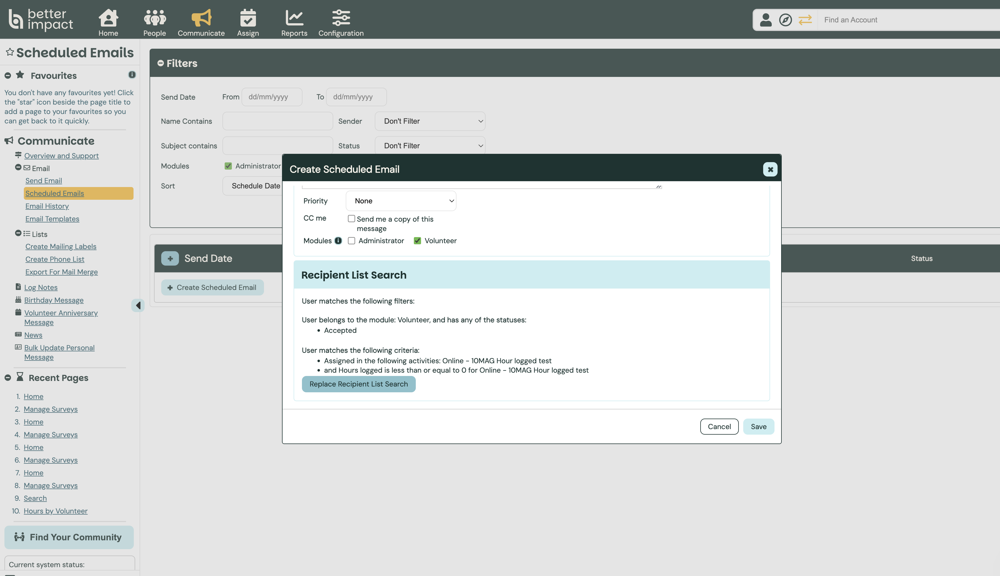
Search attached SaveDo this right after creating the opportunity (within 30 days of send) Use Replace Recipient List Search if the opportunity name changes
Tie it to Creating Opportunities
Recommended sequence when you launch a new opportunity:
1. Create the opportunity in Manage Activities (Creating Opportunities).
2. Note the end date from the schedule / Basic Info.
3. Within 30 days of that end date, create this scheduled hours reminder with Send Date = end date and Activity = that opportunity.
4. Optionally register the opportunity in the survey tracker (Surveys — Volunteer Feedback) so feedback still sends when volunteers reach target hours.
Surveys reward people who have logged hours; this scheduled email nudges people who have not. Use both for a complete close-out.